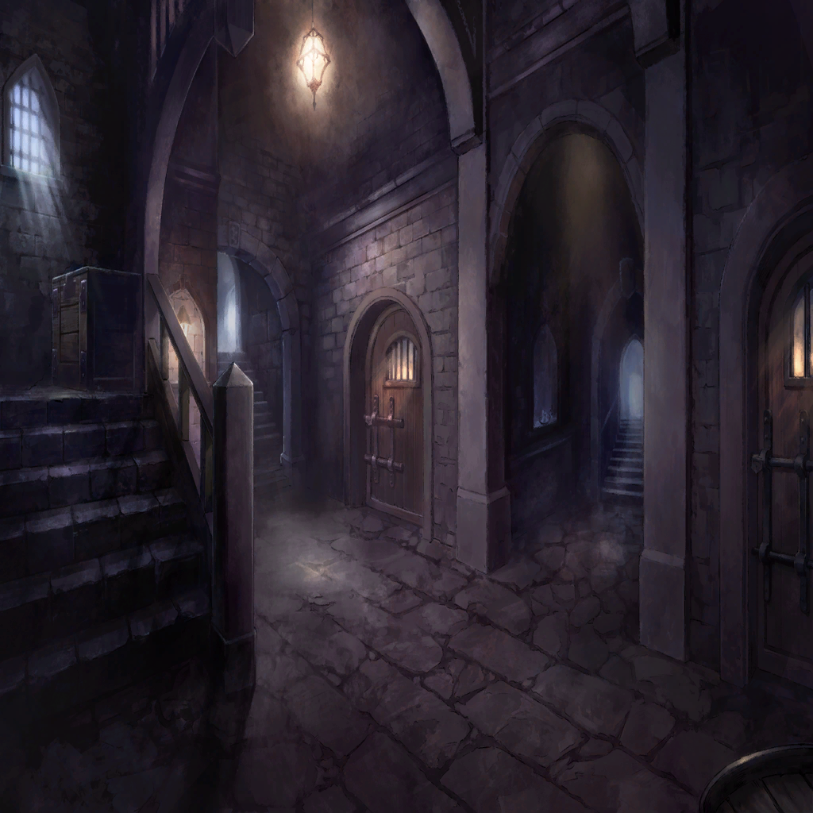

|
|  |
| |
力が、溢れてきた |
| |
本能が、感じ取っていた
これは自身の中に眠っていた力であると―― |
| |
この理不尽に抗う為の
妹を、守り抜く為の
この憎悪を、行使する為の |
| |
命を、弄ばれない為の、力が |
| |
憎いから、守りたい
守りたいから、憎い |
| |
その相反した感情から、
力が湧き上がってくるようだった |
| |
まずは、俺たちを捕まえこんなところに
閉じ込めるきっかけとなった人間ども―― |
| |
そいつらを、殺そう
俺たちを地獄に突き落とした、
絶対に許すことのできないそいつらを |
| 研究員 |
―――――――― |
| |
目の前の人間から得た情報では
そいつらは“鬼狩り”と
呼ばれる者たちであること―― |
| |
人数も規模も不明な
集団であることがわかった |
| |
――それならば |
| |
人間を、すべて殺そう
そうすれば“鬼狩り”の者もすべて殺せる
それだけが―― |
| |
――カエデにしてやれる唯一のこと
そして―― |
| |
――俺の唯一の、望みだった |

タンバ |
カエデ…？ |
タンバ |
…………ちっ！ |

カエデ |
…兄さん |
タンバ |
…なんだ？ |
カエデ |
私…ここで死にたくなんかない
これ以上…奪われるのは… |
タンバ |
カエデ…!?
どうした、しっかりしろ!! |
カエデ |
嫌…だ…
…………………… |
カエデ |
………… |
タンバ |
おい、カエデ…カエデ!? |
カエデ |
…オオオ、オオオオオ…… |
タンバ |
…!? |
カエデ |
オオオオオオオオオオオオオオオオッ!!!! |
| |
変わり果てたカエデの姿が、そこにあった |
| |
殺戮と呼ぶにも生温い
――圧倒的な力であった |
カエデ |
…オオオオオオオオオオオオオオッ!!!! |
| |
そしてその場に集ったすべての人間を殺し、
カエデは、こちらに飛びかかってきた |
カエデ |
――――――!!!! |
| |
声にならない声を上げ、
身体は血に塗れている
しかし―― |
カエデ |
―――――――― |
| |
その眼には、涙が光っていた |
タンバ |
カエデ…カエデ!!! |
| |
何度もその名を呼んだ
“普通”を欲していた、小さな命の名を |
タンバ |
これは…“普通”じゃない！
お前に“普通”を教えてやるから…
…だから!! |
タンバ |
一緒に生きよう…
カエデ…!!! |
| |
必死に届けと叫んだ
そして次の瞬間、
カエデの身体から力が抜けた |
| |
その身体を抱きとめ、支えた
この小さな身体が、命が求めたのは―― |
 |
| |
決してこのようなものではない |
| |
願わくば――いいや
二度とこのような思いをさせるまい、と
心に誓った |
| |
その為に――俺は強くあるべきだ
人間を、殺し尽くす為に |
|
| |
そして、カエデを抱きかかえたまま
走り出した |
| |
この狭い世界の、外側へ |
| |
どこをどう走ったのか、覚えていない
とにかく必死で、外を目指した |
| |
そして―― |
 |
| |
――世界が、拡がった |
 |
カエデ |
…兄さ…ん？ |
タンバ |
…カエデ |
タンバ |
…これからお前が知るのが
“普通”の世界だ |
カエデ |
………… |
 |
タンバ |
…もう二度と、あんな思いはさせない |
タンバ |
いつの日か…人間どもを
根絶やしにしてみせる |
カエデ |
兄さん………… |
タンバ |
まずは、父さんや母さん…そして俺たちを
捕らえたあの人間ども…“鬼狩り”と
呼ばれていたそいつらを皆殺しにする |
タンバ |
そうすれば…きっとお前は再び人間を
喰えるようになるはずだ |
カエデ |
そんな確証はどこにも… |
タンバ |
過去を踏み越えさえすれば…
お前の抱えているものを軽くしてやれる
その為ならなんだってするさ |
タンバ |
そして、お前に
“普通”の日々を送らせてやるんだ |
カエデ |
………… |
タンバ |
どうした？ |
カエデ |
…ううん
ありがとう、兄さん |